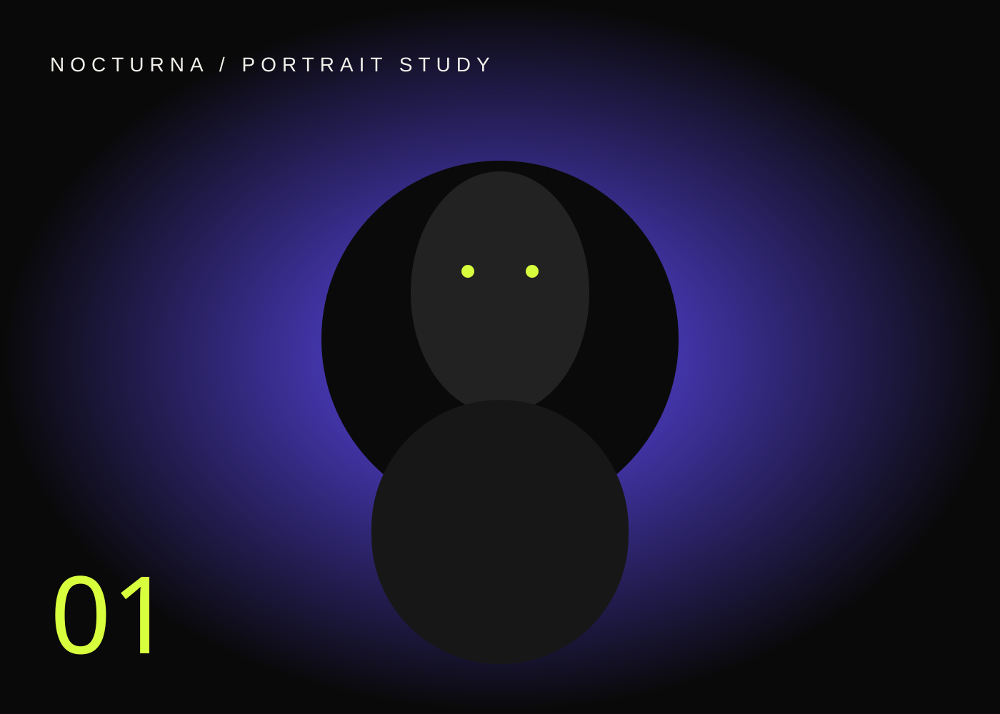

JavierMoreno
Creo fotografía, identidades visuales, campañas y experiencias web que no se sienten “correctas”. Se sienten inolvidables.

Una buena imagen llama la atención.Una gran idea cambia cómo te recuerdan.
Trabajo entre fotografía, diseño, motion y web para crear piezas con una dirección visual única y coherente.
un lenguaje
PROYECTOS
Fotografía, campañas, identidades, interfaces y piezas audiovisuales. Esta galería está preparada para reemplazar los demos por tus trabajos reales.
CUATRO FORMAS
DE HACER RUIDO.
Puedes contratar una disciplina o conectar varias para construir una campaña, marca o experiencia completa.
SOY JAVIER.ME ABURRE LO OBVIO.
Soy fotógrafo, diseñador gráfico y diseñador web en Caracas, disponible para proyectos en Venezuela y de forma remota. Convierto ideas en experiencias visuales con carácter: imágenes que detienen el scroll, identidades reconocibles y webs que se sienten vivas.
Hablemos de tu proyecto ↗